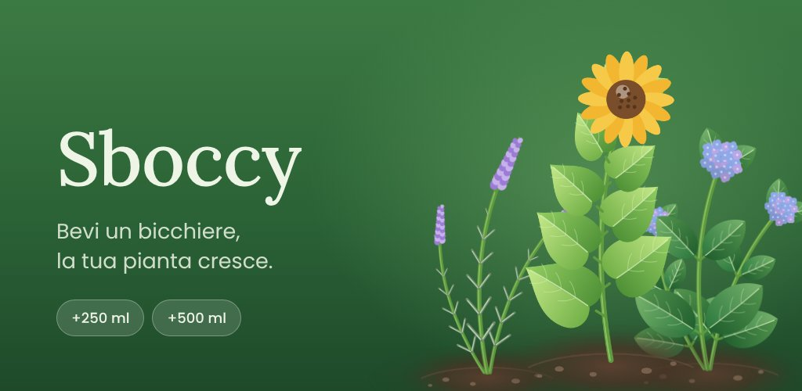
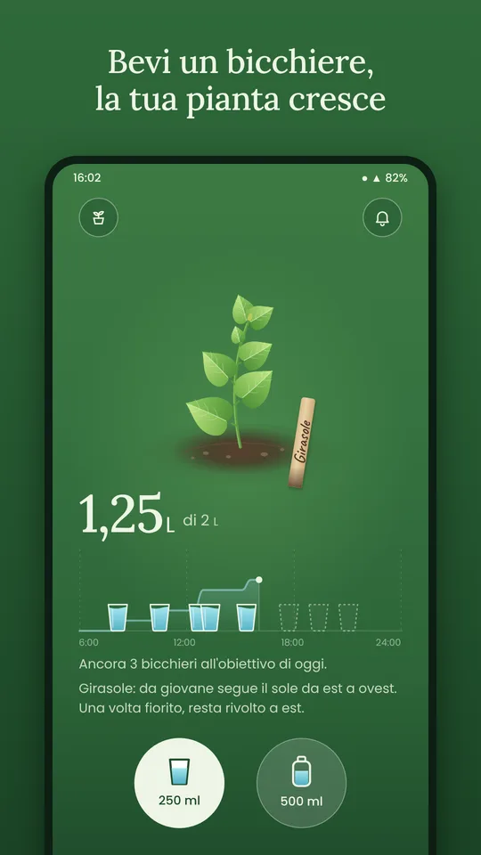
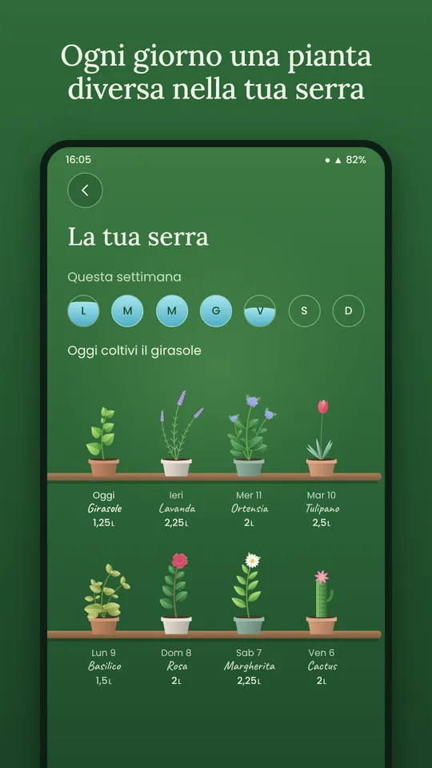
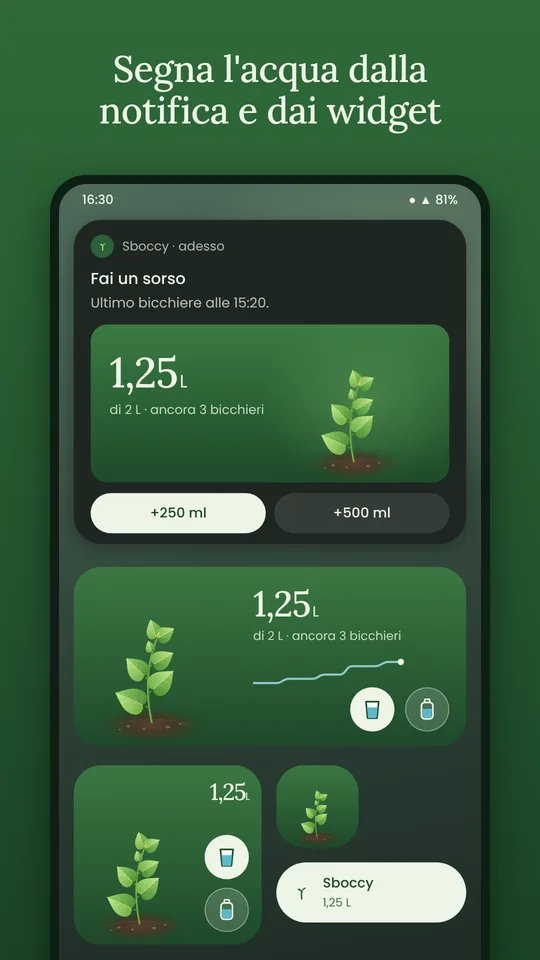
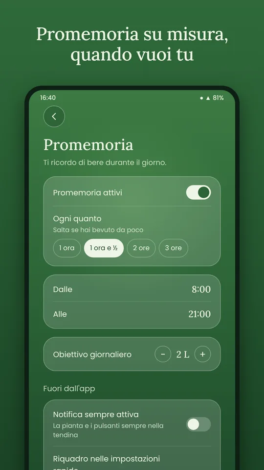

Bevi un bicchiere,
la tua pianta cresce.
Sboccy è un'app Android che ti aiuta a bere abbastanza acqua durante il giorno. Ogni giorno nasce una pianta diversa: a ogni bicchiere cresce un po', e quando raggiungi l'obiettivo sboccia. Le piante dei giorni passati restano nella tua serra.





Come funziona
Bevi e tocca
Ogni volta che bevi, tocca 250 ml o 500 ml: dall'app, dal widget, dalla notifica o dal riquadro delle impostazioni rapide.
La pianta cresce
Ogni giorno una specie diversa, tra oltre 50: dal girasole al basilico. Cresce con te e all'obiettivo fiorisce, con una curiosità su di lei.
Riempi la serra
Ogni giornata va sugli scaffali della serra. I promemoria ti ricordano di bere, solo nelle ore che scegli tu e mai se hai appena bevuto.
Privacy
In breve: Sboccy non raccoglie, non trasmette e non condivide nessun dato.
- I bicchieri, l'obiettivo e le impostazioni restano sul tuo telefono.
- L'app non si collega a Internet: non ha nemmeno il permesso per farlo.
- Niente account, pubblicità, statistiche o componenti di terze parti.